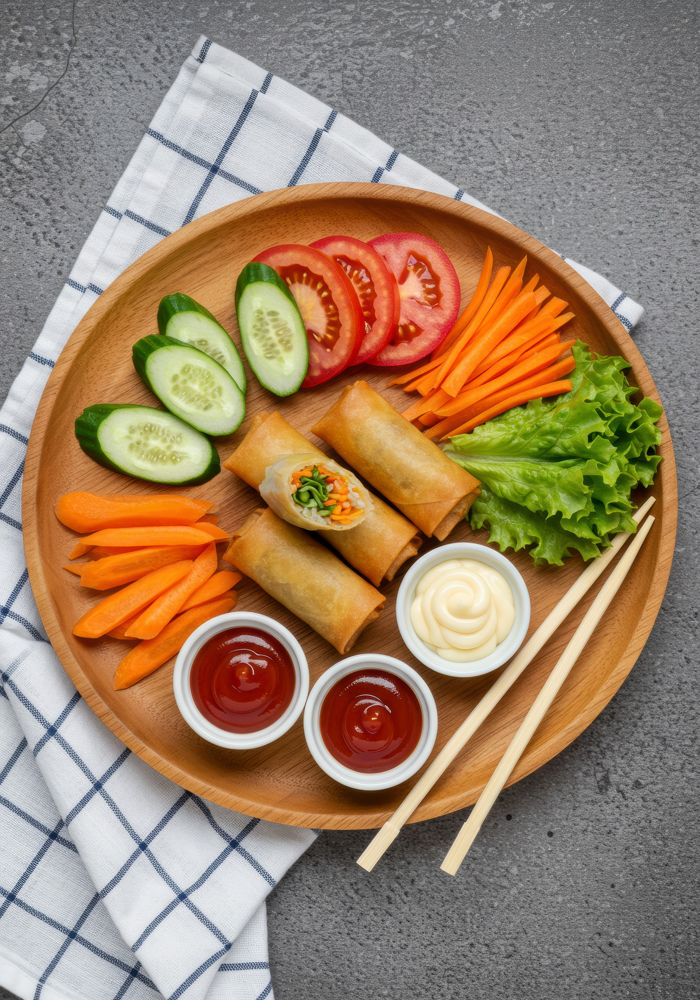

Frühlingsrollen mit Gemüse
20 min
mittel
20.08.2025
Was brauchen wir?
Die Zutaten sind standardmässig für 2 Portionen berechnet.
Du kannst die Anzahl der Portionen ändern, um
die Mengen anzupassen.
Maximal sind es 10 Portionen.
Zutaten:
Zubereitung
Zubereitet in 25 min
Fertig in 45 min
Frühlingsrollenblätter einzeln im warmen Wasser durchtränken bis sie weich sind. Die einzelnen Blätter flach zwischen zwei feuchte Handtücher legen. Zur Seite stellen. Glasnudeln in lauwarmen Wasser 10 Min. einweichen und gut abtropfen lassen. Danach in 6 cm lange Stücke schneiden. Öl in einer Pfanne erhitzen. Lauch, Kabis, Rüebli und Glasnudeln hineingeben und bei mittlerer Hitze etwa 1 Min. anbraten. Mit gemahlenem Pfeffer und Fischsauce würzen. Erst am Schluss die Mungbohnensprossen untermischen und abkühlen lassen. 2 EL Füllung auf die untere Hälfte vom Reisblatt geben. Die Seiten des Blattes über die Füllung falten und von unten her aufrollen. Die Rollen mit Wasser zukleben. Die Frühlingsrollen bei mittlerer Hitze im Öl braten bis sie goldbraun werden. Auf Küchenpapier entfetten, mit Spring Roll Sauce oder Sweet Chili Sauce warm servieren.
Nährwertnangaben pro Person
| Energie | Eiweiss | Kohlenhydrate | Fett |
|---|---|---|---|
| 412kcal | 6g | 1g | 93g |